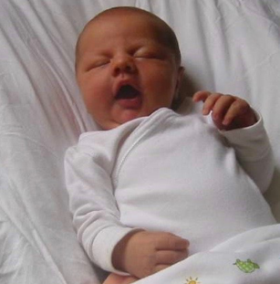
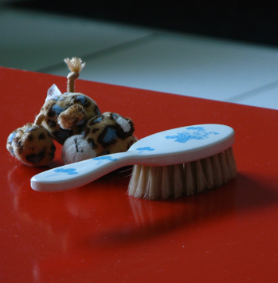
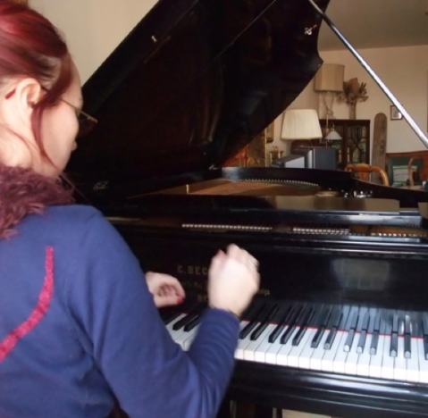

Vous attendez un bébé ?
La sophrologie et/ou la méditation vous aideront à vivre pleinement votre grossesse, seule ou avec le papa
Besoins auxquels ces pratiques répondent
- Gérer les manifestations émotionnelles, stress, angoisses, hypersensibilité liée à la grossesse et à tous ses bouleversements
- Faciliter l'intégration des modifications corporelles
- Mieux gérer les désagréments de la grossesse : nausées, constipation, douleurs du dos…
- Se préparer aux actes médicaux pour les aborder sans stress
- Favoriser le lien avec votre bébé
- Préparer l'accouchement pour apaiser les angoisses, le stress. La sophrologie permet de se projeter positivement le jour de l'accouchement.
- Appréhender sereinement le jour J puisque qu'il aura été préparé, envisagé, vécu lors des séances
Bébé est arrivé ?

La sophrologie vous accompagne pour
- Gérer les douleurs post-accouchement : césarienne, épisiotomie…
- Se ressourcer, retrouver sa vitalité
- Gérer les manifestations émotionnelles : baby blues ou autre
- Retrouver son corps, sa féminité
- Favoriser le lien avec bébé
Etre sur le chemin de la parentalité est pour chacun une première fois même si une grossesse, un enfantement ont déjà été vécu
Ces premières fois sont composées de couleurs, de textures différentes
Le lien au papa, à la maman est autre. Nous sommes tous en constante évolution, dans un mouvement, celui de la Vie, ce mouvement, nous n'en avons pas la maîtrise
Ce qui est par contre à notre portée, c'est la qualité, la teneur du regard que nous portons sur ce flux.
Les pratiques que je propose permettent de s'adapter, d'intégrer tranquillement, à son rythme, ces fluctuations pour la joie et le bien-être de tous.

Il arrive que l'événement attendu ne se déroule pas comme prévu et que l'on soit alors percuté par le deuil impensable du bébé. Vous pourrez, entre autres car il vous faudra probablement chercher de l'aide auprès de professionnels du monde médical, vous tourner vers la sophrologie ou la méditation afin d'œuvrer, de participer à cette épreuve inacceptable cependant là présente, physiquement et psychiquement.
Les séances peuvent là aussi bien sûr se vivre seule ou en couple.
Cancer
Sophrologie et Pratique de la Méditation
La sophrologie fait partie des soins de support qui dans les hôpitaux et à l'extérieur, peuvent aider les personnes vivant avec un cancer. Elle est reconnue par le dernier Plan Cancer du ministère de la Santé 2014-2019.
La sophrologie et/ou la pratique de la méditation accompagnent les personnes vivant avec un cancer, elles permettent de mieux vivre avec les troubles liés à la maladie et aux traitements, de diminuer ou même de supprimer des douleurs.
L'anxiété, les nausées, la fatigue ou l'insomnie peuvent être réduites voire supprimées là aussi, ainsi que les perturbations liées à l'image du corps.
Ces temps de pratique permettent un recentrage sur l'ici et maintenant à travers le souffle et les sensations corporelles. C'est en prenant appui sur son corps, en l'abordant autrement sans le juger, que l'on va pouvoir se construire autrement, en retrouvant confiance.
Les techniques s'appuient sur
- La respiration
- La prise de conscience du corps et de ses sensations
- La gestion des émotions
- L'activation des ressources intérieures
Les séances sont des moments d'écoute et de partage où il est possible de se ressourcer, de s'exprimer sur ses émotions, ses ressentis quels qu'ils soient.
Pour obtenir le plus de bénéfice possible, il est recommandé de s'entraîner régulièrement.
Les patients qui ont recours à ces pratiques remarquent que les séances les aident à se détendre, à mieux appréhender les traitements en cours, à mieux gérer leurs émotions, à prendre un peu de recul, et à avoir plus d'énergie, de confiance en soi.
Besoins auxquels ces pratiques répondent
- Diminuer l'anxiété. Celle-ci peut varier selon les jours, par exemple si la séance de chimiothérapie précédente s'est mal passée, la personne peut ressentir de l'anxiété anticipatoire avant la séance suivante. Elle pourra même avoir de réelles nausées, similaires à celles provoquées lors de la précédente séance alors même qu'elle ne l'aura pas encore vécue.
- Améliorer les troubles du sommeil. Aider à lâcher prise, à tenir à distance les pensées anxiogènes, favoriser la relaxation
- Réduire les manifestations des effets secondaires des traitements
- Accepter le traitement
- Mieux gérer le stress et les émotions : apprendre à les reconnaître, à les nommer, colère, tristesse…
- Se préparer aux examens, radiothérapie, IRM, anticiper positivement
SOPHROLOGIE ET MUSIQUE

Je propose des séances qui débutent par la pratique de la sophrologie avant celle du piano ou du clavecin.
Je vous explique pourquoi
La sophrologie permet d'entrer en contact avec soi en profondeur, ceci très tranquillement. Elle ouvre, libère des espaces, permet à notre corps comme à notre mental d'être au calme, relâchés, disponibles pour ce qui est dans l'instant.
Cet état d'être nous permet d'entrer dans la pratique, l'apprentissage du piano ou du clavecin paisiblement et surtout en pleine possession de nos capacités, ouvert.
La sophrologie permet le réveil de la confiance, confiance en soi, nous libère des freins que nous posons instinctivement par peur de « ne pas y arriver ».
Préparation aux concours, aux examens :
Grandes Ecoles, Baccaulauréat, Permis de conduire…
En finir avec le trac
Point fort de la sophrologie par rapport à d'autres méthodes
Elle est une synthèse de plusieurs techniques
- Relaxation
- Travail sur la respiration
- Activation de pensées positives, programmation positive, visualisation
- Travail sur la concentration
- Sophro-relaxations-énergétiques
Objectif des séances
- Gestion de la peur et du stress
- Amélioration de la connaissance de soi
- Augmentation de la confiance en soi
- Amélioration de la capacité de concentration
- Amélioration de la mémoire
- Stimulation des pensées positives
- Augmentation de la motivation
- Augmentation de son potentiel général
- Amélioration du sommeil
- Augmentation de l'énergie physique
Les séances permettent de travailler sur la régulation des émotions, aident les personnes qui ont un trac particulièrement envahissant, qui ont du mal à se préparer seuls ou qui ont tout simplement peur de perdre pied le jour J.
Les techniques allient préparation physique (respiration, relaxation, mouvements) et préparation mentale (projection sur le jour des examens, positivité, activation des potentiels, des ressentis liés à la réussite).
Ce sont des exercices très simples qui seront re-travaillés à la maison grâce aux supports que je délivre en fin de séance.
Il est possible de travailler en séances individuelles ou de former un groupe
Je peux intervenir en milieu scolaire, étudiant ou professionnel, ceci à l'année de manière régulière ou par sessions avant les examens et concours.
Exemple de protocole en 10 séances pour un groupe de 8 à 10 élèves
Séances 1 et 2 : Apprendre à se détendre avec des exercices de respiration, à mieux connaître son corps afin de gérer l'énergie. Relaxations, travail sur l'évacuation des tensions physiologiques et psychologiques.
Séances 3 et 4 : Apprendre à gérer le stress. Travail sur la présence. Mémoire, concentration, anticipation sur les examens pour agir sur du concret.
Séances 5, 6, 7 : Se projeter dans les examens de manière positive. Prise de conscience de ses capacités, de sa tenue, de son souffle, de sa manière de se présenter, de parler.
Séances 8, 9, 10 : Mise en pratique, les élèves passent un test d'examen seuls devant leurs camarades. Se projeter avec confiance et assurance.
Il est vivement recommandé de travailler de manière régulière
Pourquoi pratiquer la sophrologie lorsque l'on est musicien, danseur, comédien ?
La sophrologie
- libère les tensions inutiles
- renforce la connaissance du corps et de ses limites
- renforce la mémoire et la concentration
- rétablit l'équilibre entre le corps et le mental
Jouer d'un instrument, danser, interpréter un texte, travailler de manière régulière afin d'obtenir un résultat crée parfois des tensions, dans le corps ou dans la tête. Et l'on n'en a pas toujours conscience.
Tout à notre tâche, répondre à la demande du professeur, du chef d'orchestre, du chorégraphe, du metteur en scène ou même tout simplement réussir pour soi-même, peut provoquer une disharmonie entre soi et ses besoins essentiels : respirer calmement, dans la détente, dans une écoute profonde, relax.
La pratique de la sophrologie permet de prendre conscience de notre état ici et maintenant et de réajuster si nécessaire notre posture physique ou notre mental parfois rigidifiés par une volonté trop forte d'y arriver. Elle permet de renforcer des capacités et de dépasser des difficultés.
Revenir à soi permet de s'écouter avec une oreille neuve, de rétablir un rapport bienveillant vis-à-vis de soi-même.
Intégrer l'idée que nous pouvons nous tromper, faire des erreurs est essentiel, comprendre ce que nous devons modifier pour parvenir à jouer un trait, un enchaînement difficile, nécessite une attitude bienveillante vis-à-vis de soi et permet surtout un gain de temps et d'énergie. En agissant ainsi, nous arrivons à un résultat satisfaisant beaucoup plus facilement qu'en répétant un passage de manière automatique sans conscience de ce que l'on engage physiquement. Il y a toujours une solution à trouver lorsque l'on n'arrive pas à jouer un passage difficile techniquement, pour cela il faut prendre le temps, c'est ce que la pratique de la sophrologie nous propose. Il en est de même dans le jeu de l'acteur et du danseur.
L'objectif de la sophrologie est de nous ramener à nous afin d'être dans un état de détente et dans l'écoute de ce qui se passe en nous, là ici et maintenant, et il faut pour cela s'entraîner régulièrement car comme pour tout apprentissage, on n'obtient rien sans régularité.
Le sophrologue guide la séance qui se déroule assis ou debout.
Par sa voix, il va amener chacun à se relier à sa respiration, à se détendre. Ensuite, il pourra guider une technique qu'il aura préalablement expliquée. Il s'agira de travailler sur sa concentration ou de se projeter mentalement lors d'un événement tel une audition, de vivre la situation sur laquelle nous souhaitons travailler avec pour objectif d'activer toutes nos capacités de manière à ce qu'au jour J ces capacités ne nous fassent pas défaut à cause du trac.
Certaines techniques de la sophrologie sont directement liées à la préparation à un examen ou à une prestation publique qu'elle soit musicale ou pas, toutes les pratiques ont pour objectif une qualité de présence à soi-même puis à l'autre qui ont un rôle à jouer notamment lors des séances de travail à la maison ou pendant le cours.
L'idée principale est d'être dans un état privilégiant le bien-être, le plaisir et la belle réalisation de la pièce jouée, dansée, chantée, interprétée.
Je le rappelle, en dehors de notre pratique artistique, la sophrologie a un impact extrêmement bénéfique sur notre qualité d'être, notre qualité de vie d'une manière générale.